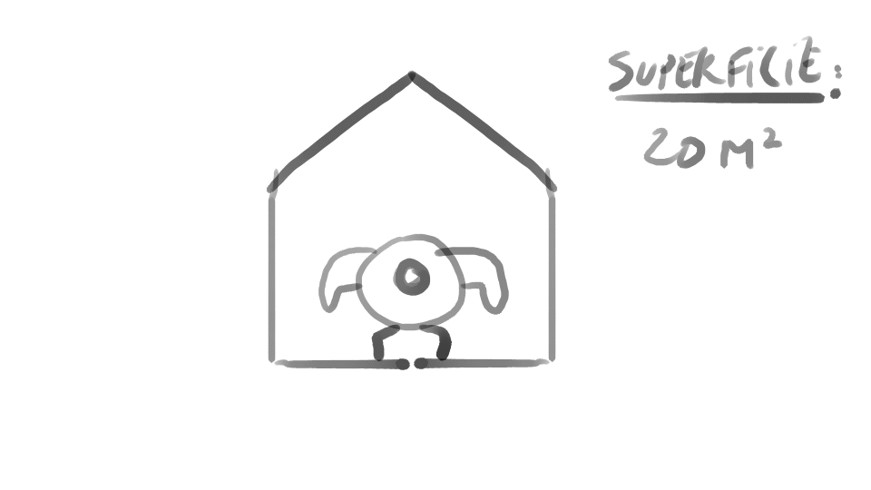
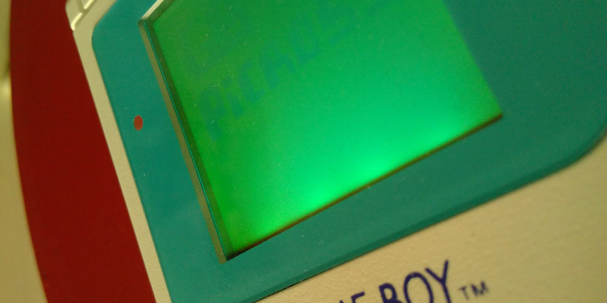
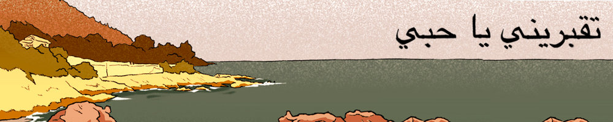

2018-08-17
gamedev, post-mortem
La version originale de ce post mortem est disponible sur le site de la Ludum Dare.
Original version is available on the Ludum Dare website.
Et le thème est…
Samedi, 00:00.
Pendant que ldjam.com est hors ligne parce que beaucoup trop de monde veut connaître le thème, je vais sur Twitter et lis: «Running out of space» («Être à cours de place»). Seul chez moi, je suis sur Discord avec mes coéquipiers Kokonaught et Noojsan.
Rapidement, on a une idée qui nous plaît: l’histoire d’un body-builder vivant dans un minuscule appartement dont la vie devient de plus en plus difficile alors qu’il devient de plus en plus gros. Au niveau du gameplay ce serait un jeu avec des mini-jeux très rapides, un peu comme un WarioWare.
Histoire de garder d’autres options ouvertes on continue à discuter d’autres idées, l’une d’elles est à propos de personnages vivant sur des îles flottant dans le ciel qui sont obligés de jeter des affaires par dessus bord pour éviter de couler.

Après un moment à discuter on a décidé de partir sur cette seconde idée. La première, reposant trop sur le nombre de mini-jeux pour être marrante, semblait moins accessible pendant une jam.
Il est maintenant 02:00 et je vais me coucher histoire de me commencer à travailler de bonne heure.
Le doute
Je me lève vers 07:00 et commence à mettre en place les fondations de notre jeu : une carte isométrique dont les tuiles disparaissent, un personnage qui peut se déplacer et soulever et lancer des trucs.
Peu de temps après mon déjeuner, mes coéquipiers sont de nouveau avec moi (on est dans deux zones horaires différentes donc nos rythmes sont decalés). Une fois qu’on est de nouveau ensemble il se passe quelques chose de terrible : le doute entre en jeu. Peu importe combien de temps on réfléchit, on n’arrive pas à trouver un moyen de faire quelques chose de marrant et d’agréable à jouer avec cette idée…
Lire la suite
2018-03-24
gamedev, programmation
Depuis la sortie de sa version 3, le moteur de jeu Godot permet d’écrire ses scripts en C# grâce à Mono. Aussi cool que ça puisse être, ce que le peuple veut vraiment c’est écrire tout ça en F#. Et bien avec un tout petit peu de bidouille, c’est complètement possible.
Voilà comment je m’y prend.
Lire la suite
2018-01-31
gamedev

Parce que je suis un peu con, je me suis lancé pour 2018 dans l’aventure #1GAM (One Game A Month).
On est fin janvier, le premier mois est donc terminé, premier bilan !
Lire la suite
2017-12-28
jeu vidéo
En 2015 et 2016 j’avais profité de la fin d’année pour jeter un œil en arrière sur les films qui m’avaient fait me déplacer jusqu’à un cinéma.
Le problème c’est que cette année ma fréquentation des salles obscures a été plus qu’éparse. Du coup je me suis dit que j’allais remplacer mon (désormais) habituel bilan cinéma par un bilan jeu vidéo.
Il n’y a pas forcément d’ordre, ce ne sont pas non plus forcément des jeux sortis en 2017, mais ce sont tous des jeux qui m’ont marqué cette année.
J’ai quelques regrets à ajouter à la liste, des jeux auxquels j’aurais voulu jouer cette année mais pour lesquels je n’ai pas eu le temps : Persona 5, Oxenfree, Night in the Woods, Stories Untold… Je me dis que ce n’est que partie remise pour l’année prochaine.
Lire la suite
2017-12-11
gamedev, post-mortem
Enfin, comme on me le faisait remarquer alors que j’écrivais ces premières lignes, un post-mortem n’est-il pas toujours un minimum égocentré ?
Quoi qu’il en soit, fin octobre dernier sortait Enterre-moi, mon amour, le jeu auquel j’ai dédié une grosse partie de cette dernière année. Pour ceux qui seraient passé au travers, Enterre-moi, mon amour est un jeu d’aventure sur smartphone. On y suit le périple vers l’Europe de Nour, une migrante syrienne, à travers sa discussion SMS avec son mari Majd, resté en Syrie.
Je pense qu’il est plus que temps pour moi de réfléchir et écrire un peu sur cette expérience, et plus précisément sur la fin de production qui a malheureusement été un peu abrupte pour moi.

Lire la suite